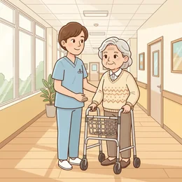

Eine Übergabe geben, Angehörigen etwas erklären, freundlich Grenzen setzen.
Schau dir das Bild an
Zuerst nur schauen und beschreiben — die Wörter kommen gleich danach.

🗣️ Zum Einstieg – sprecht reihum: Beschreibt das Bild. Nutzt: „Auf dem Bild sehe ich …“, „Die Person …“, „Im Hintergrund ist …“
Erste Fragen
Wer arbeitet auf dem Bild, wer wird begleitet?
Was sagst du zu Beginn deiner Schicht?
Welche drei Dinge gehören in jede Übergabe?
Wortschatz
Tipp auf 🔊, um das Wort zu hören. Lies den Satz darunter laut.
die Schicht
„Diese Woche habe ich die späte Schicht.“
die Übergabe
„Bei der Übergabe berichte ich, was in der Nacht war.“
der Bewohner
„Der Bewohner aus Zimmer vier möchte gern nach draußen.“
die Pflegekraft
„Als Pflegekraft arbeite ich im Schichtdienst.“
der Blutdruck
„Der Blutdruck war heute Morgen etwas niedrig.“
das Medikament
„Der Arzt hat mir ein Medikament gegen die Schmerzen verschrieben.“
die Visite
„Die Visite ist immer um neun.“
waschen
„Vor dem Schnitt waschen wir die Haare.“
aufstehen helfen
„Zu zweit können wir ihm besser beim Aufstehen helfen.“
die Windel
„Die Windel wechseln wir vor der Nachtruhe.“
klingeln
„Wenn Sie etwas brauchen, einfach klingeln.“
die Dokumentation
„Ohne Dokumentation gilt eine Leistung als nicht erbracht.“
die Übergabe
„Bei der Übergabe berichte ich, was in der Nacht war.“
dokumentieren
„Bitte dokumentieren Sie jede Gabe sofort.“
die Vitalzeichen
„Die Vitalzeichen sind stabil.“
mobilisieren
„Wir mobilisieren Frau Braun heute zum ersten Mal.“
Beispieldialoge
Lest zu zweit mit verteilten Rollen — dann spielt es mit euren eigenen Worten nach.
💬 Übergabe auf der Station · B1–B2
Schichtwechsel im Pflegeheim. Du übergibst an die Kollegin aus der Spätschicht.
A
So, ich bin da. Wie war die Frühschicht? Fang mit Zimmer 12 an.
B
Frau Kaiser in Zimmer 12 hat schlecht geschlafen und heute kaum gegessen. Sie hat nur einen halben Joghurt geschafft.
A
Hat sie Schmerzen? Wurde ihr etwas gegeben?
B
Sie hat über Bauchschmerzen geklagt. Ob am Vormittag etwas gegeben wurde, weiß ich nicht sicher — das müsste in der Dokumentation stehen.
A
Und Herr Özdemir? Der Arzt war doch heute da, oder?
B
Ja, der Arzt war um elf da. Die Wunde soll ab jetzt zweimal täglich neu verbunden werden. Ein Wort habe ich nicht verstanden: Was heißt Kompression?
A
Kompression heißt fester Verband, damit weniger Wasser im Bein bleibt. Sonst noch etwas?
B
Danke, jetzt ist es klar. Offen ist noch: Die Tochter von Frau Bauer wollte heute Nachmittag anrufen.
A
Alles notiert. Schönen Feierabend!
B
Danke, dir eine ruhige Schicht. Wenn etwas unklar ist, ruf mich ruhig an.
💬 Gespräch mit einer Angehörigen · B2–C1
Die Tochter einer Bewohnerin spricht dich im Flur an. Sie ist mit der Pflege ihrer Mutter unzufrieden.
A
Entschuldigung, ich muss mit Ihnen reden. Meine Mutter hatte gestern denselben Pullover an wie vorgestern. So etwas darf doch nicht passieren.
B
Vielen Dank, dass Sie mich direkt darauf ansprechen. Ich kann gut verstehen, dass Sie das ärgert.
A
Ärgern ist noch harmlos. Ich frage mich, was hier sonst noch übersehen wird.
B
Ich möchte das nachvollziehen. Ging es um Montag und Dienstag? Ich sehe in der Dokumentation nach und spreche mit den Kolleginnen der Spätschicht.
A
Und was passiert dann? Ich habe schon zweimal etwas gesagt, geändert hat sich nichts.
B
Versprechen kann ich Ihnen nicht, dass sofort alles perfekt läuft. Was ich zusagen kann: Ich gebe es heute noch an die Pflegedienstleitung weiter und schlage vor, dass Sie beide sich diese Woche zusammensetzen.
A
Gut. Dann erwarte ich aber, dass sich wirklich jemand meldet.
B
Halten wir es so fest: Ich informiere heute die Pflegedienstleitung, und Sie erhalten bis Freitag eine Rückmeldung. Unter welcher Nummer sind Sie am besten erreichbar?
💬 Frau Klein möchte nicht aufstehen · A2–B1
Morgenpflege im Pflegeheim. Frau Klein will heute nicht aufstehen und nicht geduscht werden.
A
Nein, ich will nicht aufstehen. Lassen Sie mich einfach liegen.
B
Guten Morgen, Frau Klein. Sie möchten heute liegen bleiben? Erzählen Sie mir, was los ist.
A
Ich bin so müde. Und das Wasser ist immer zu kalt.
B
Das verstehe ich. Ich mache das Wasser heute wärmer. Möchten Sie sich nur waschen statt zu duschen?
A
Nur waschen? Na gut. Aber schnell, ja?
B
Ja, wir machen es schnell. Zuerst das Gesicht, dann die Arme. Ich hole jetzt das Handtuch.
A
Und heute Nachmittag? Kommt da jemand zu mir?
B
Das weiß ich nicht genau. Ich frage nach und sage Ihnen nach dem Frühstück Bescheid.
🗣️ Sätze, die immer passen
Frau … hat heute …Auffällig war, dass …Neu ist seit heute Morgen …Sie hat geklagt über …Das weiß ich nicht sicher.Bitte schau in der Dokumentation nach.Der Arzt hat angeordnet, dass …Ab heute soll …Ein Wort habe ich nicht verstanden: …Danke, jetzt ist es klar.
🎭 Jetzt ihr: Spielt einen eigenen Dialog zum Thema — eine Person fragt, die andere antwortet.
Debatte: Sollen Angehörige bei der Pflege dabei sein?
Teilt euch in zwei Gruppen. Jede Seite hat drei Argumente — sucht euch eins aus und verteidigt es.
✓ Dabei sein
Sie kennen den Menschen seit Jahrzehnten.
Vertraute Stimmen beruhigen.
Sie sehen, wie viel Arbeit dahintersteckt.
✓ Draußen bleiben
Die Pflege dauert doppelt so lange.
Manches ist für die Familie schwer auszuhalten.
Viele schämen sich vor den eigenen Kindern.
🗣️ Redemittel für die Debatte — bau diese Sätze ein:
Ich finde, dass …Ein Vorteil ist …Ein Nachteil ist …Meiner Meinung nach …Das stimmt, aber …Ich sehe das anders.Ich stimme dir zu.
🏁 Abschluss: Jede Gruppe nennt ihr bestes Argument. Danach sagt jeder einen eigenen Satz dazu.
Frei sprechen
Drei Aufträge. Nimm dir einen, sprich eine Minute — dann tauscht ihr.
📋 Leitfaden — sprich über diese Punkte:
Gib eine Übergabe: Nacht ruhig, Blutdruck gemessen, Schmerzen im Knie.
Erklär einer Tochter freundlich, warum ihre Mutter heute langsamer ist.
Eine Bewohnerin will nicht aufstehen. Sprich mit ihr, ohne zu drängen.
👥 Zu zweit · ⏱️ ca. 10 Minuten: Erst zu zweit sprechen, danach berichtet ihr der Gruppe kurz davon.
⏱️ 90-Sekunden-Challenge
Erzähle von einer Schicht, die dir in Erinnerung geblieben ist. Ein Wort, neunzig Sekunden, keine Pause. Die Hilfswörter sind dein Netz.